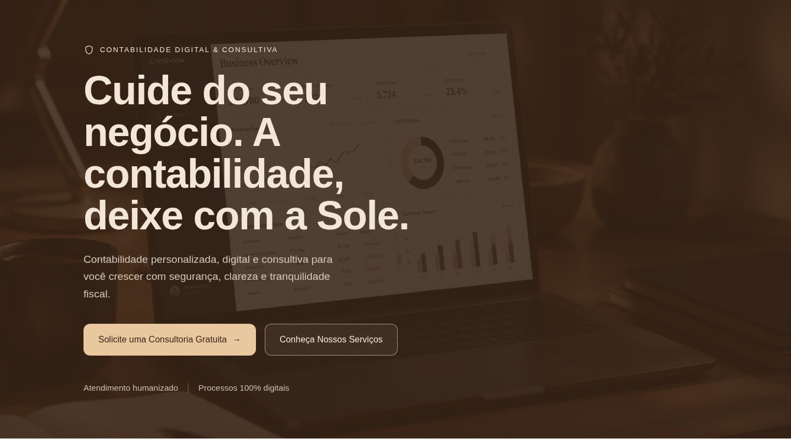
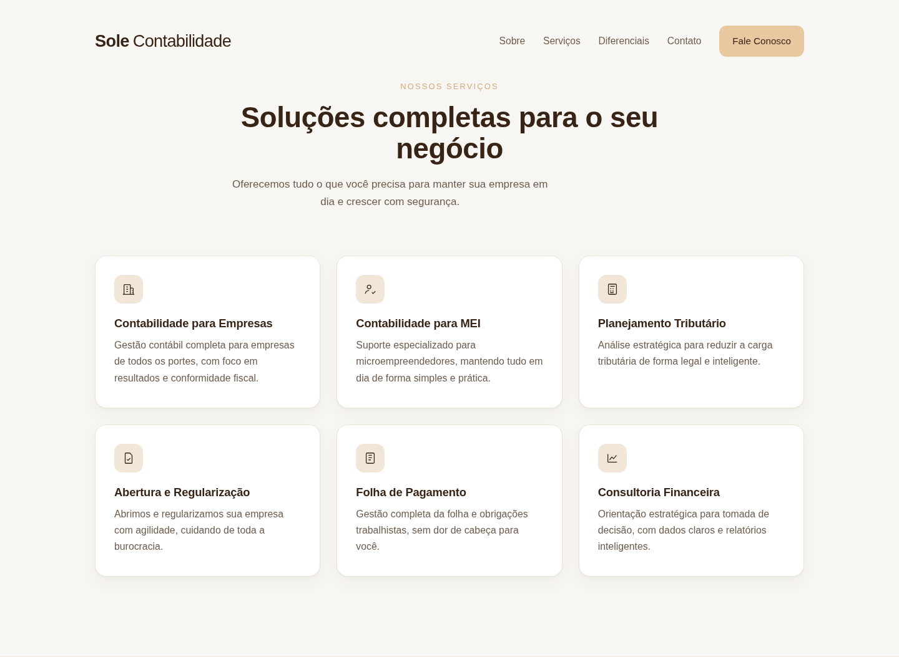
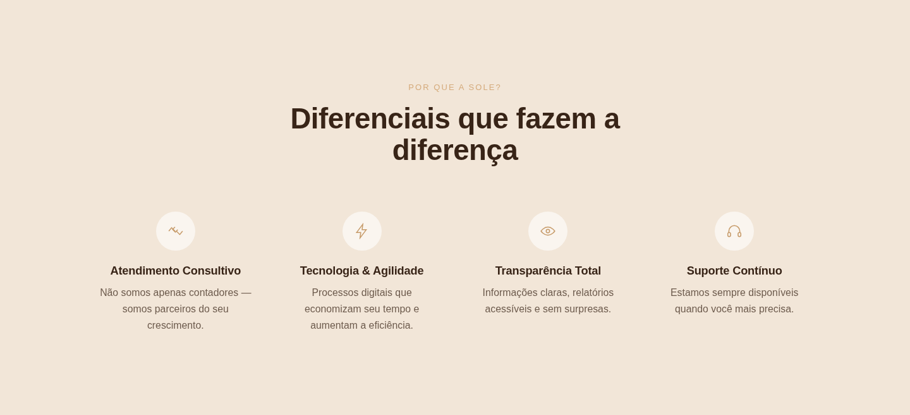
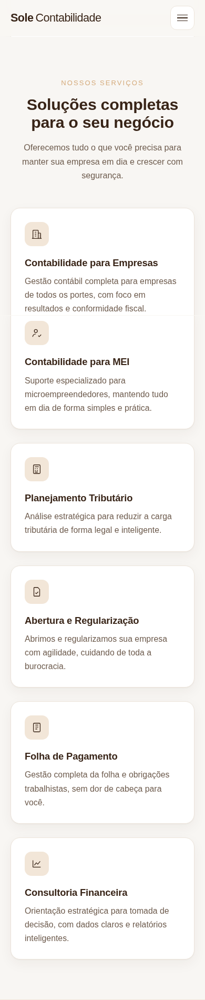
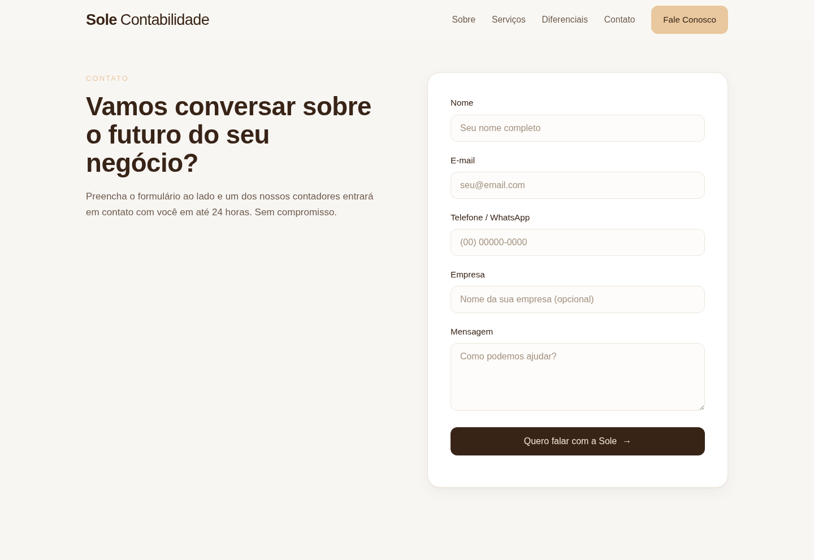

Clareza
Organizar serviços, benefícios e diferenciais em uma leitura progressiva e rápida.
11 — Landing Page Sole

Contexto
Depois da construção da identidade visual da Sole, o desafio passou a ser traduzir o sistema de marca para uma experiência digital voltada à apresentação dos serviços e à geração de novos contatos.
A landing page precisava manter o caráter próximo, consultivo e contemporâneo da identidade sem sacrificar clareza, hierarquia ou facilidade de navegação.
Organizar serviços, benefícios e diferenciais em uma leitura progressiva e rápida.
Distribuir chamadas para ação ao longo da experiência sem transformar a página em pressão comercial.
Levar paleta, tipografia e tom visual da Sole para o digital sem criar uma linguagem paralela à marca.
Arquitetura da página
A estrutura parte de uma proposta de valor direta no hero e avança por contexto, serviços, diferenciais e benefícios antes de chegar ao formulário.
Essa sequência cria uma jornada simples: entender a proposta → reconhecer valor → reduzir dúvidas → entrar em contato.


Direção visual
O marrom Café Intenso estabelece uma base sólida, enquanto Vanilla e Bege Light criam contraste, respiro e uma percepção mais humana. O resultado mantém credibilidade sem depender dos códigos visuais mais óbvios do segmento.
Cards, ícones lineares e grandes áreas de respiro organizam a informação e deixam a interface leve mesmo com uma quantidade relevante de conteúdo.
Responsividade
A versão mobile preserva o protagonismo da proposta de valor, reorganiza os cards em fluxo vertical e mantém os CTAs acessíveis sem depender da composição de desktop.

Front-end
A página foi estruturada em HTML, CSS e JavaScript puro, separando conteúdo, aparência e comportamento para facilitar manutenção e futura integração com outros sistemas.
O front-end inclui header sticky, menu mobile, navegação suave, animações de entrada, validação de formulário e tratamento para usuários com preferência por movimento reduzido.

Protótipo navegável
Esta versão de demonstração preserva a interface e as interações do projeto. Conteúdos ainda não validados para publicação foram neutralizados na cópia de portfólio.
Abrir landing page ↗Estou aberto a novas oportunidades, projetos e boas conversas.